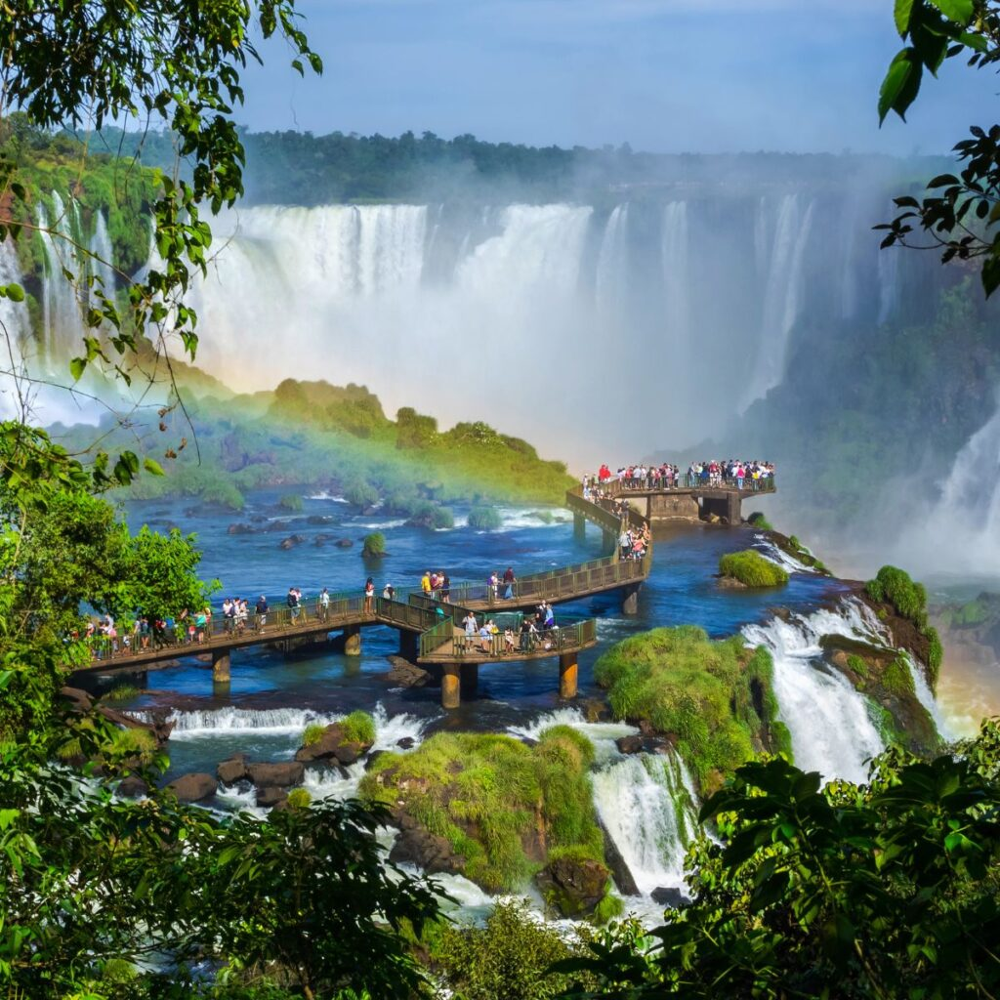

Cataratas do iguaçu, uma das maravilhas do paraná
As Cataratas também ajudam a valorizar a história e a natureza local. O turismo incentiva a preservação do Parque Nacional do iguaçu e fortalece a importãncia de proteger a biodiversidade para as proximas gerações .

Importãncia cultural
As caracteriticas do Iguaçu fazem parte da identiade cultural do Paraná e são um dos principais símbolos do estado. Elas atraem pessoas de diferentes lugares, contribuindo para a troca de culturas e para a valorizaçãp da regiãp.

importancia cultural
As Cataratas do Iguaçu fazem parte da identidade cultural do Paraná e representam a relação entre a população e a natureza. Também estão ligadas lendas, histórias e tradições locais, além de aproximarem as culturas brasileiras e indigenas. Eles são, portanto, um importante símbolo cultural da região

Curiosidades
Curiosidade 1
Escreva uma curiosidade obre o tema pesquisado.
Curiosidade 2
Escreva outra informação intressante.